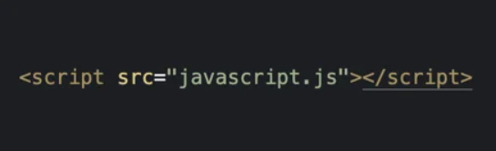

TAGS PARA ESTILOS E SCRIPTS
- Style: Deve ser incluída no Head do seu código HTML. Dentro dessa tag, é possível incluir todo o seu código CSS, ou seja, seu código de estilos.
- Script: Tem como objetivo incluir códigos de scripts ao seu HTML, podendo ser incluída em qualquer parte. Contudo, recomenda-se fortemente que seja inserida após o Footer. Dessa forma, podemos incluir nela um código javascript.